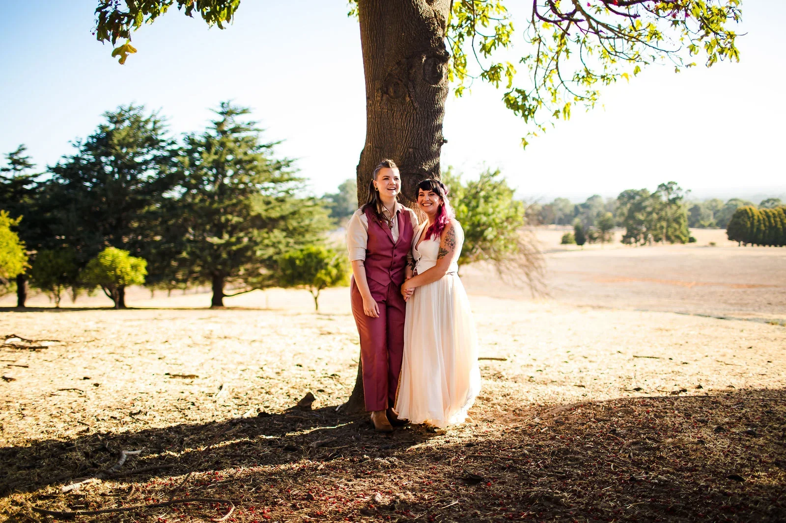
Whitby · Western Australia
Quarry Farm
wedding photographer
Quarry Farm is a 200-acre property at the foot of the Darling Range, less than an hour south of Perth. From 10am until 2am the whole place belongs to you and nobody else — and that one fact changes how the day feels, and how it photographs.
Most venues run to somebody else's clock. Quarry Farm doesn't. There's no room to turn over and no second booking waiting, so nothing has to be rushed — which means we can take you out at the moment the light is right, rather than the moment the schedule allows. On a property this size that matters more than couples expect.
It's also a rare thing to find four completely different backdrops within a short walk of each other. The Jacaranda lane, the old shearing shed, the enormous wild fig, and the open paddocks with the range sitting behind them. Nobody loses forty minutes to a car, and the pictures still don't repeat themselves.
We photographed Nyomi & Kortnee here in February, and a Perth summer afternoon is genuinely difficult light — hard, high and unforgiving until late in the day. The answer is shade and patience. We work the fig and the shearing shed through the worst of it, then move out into the paddocks once the Darling Range starts throwing shadow across the grass.
Then the Homestead takes over. It's rammed earth and glass, and those floor-to-ceiling windows hold the last of the afternoon long after the sun has gone behind the hills. Once the Edison globes come on the whole room turns warm, and it photographs beautifully without a flash anywhere in sight.
We've shot Quarry Farm twice now — Nyomi & Kortnee in February and Nat & Shanni in July — and the two days looked nothing alike. February is hard, high summer light that has to be worked around; July gives a low winter sun that runs straight down the tree avenue and throws shadows the length of the paddock. Both galleries are below, so you can see the same property in two seasons before you pick a date.
A real wedding here
Nyomi & Kortnee
Quarry Farm, Whitby
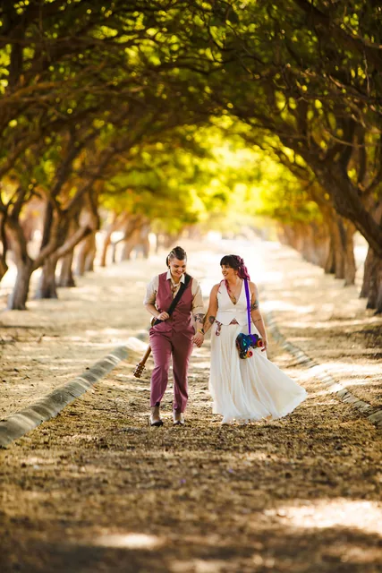
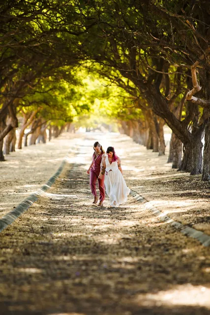
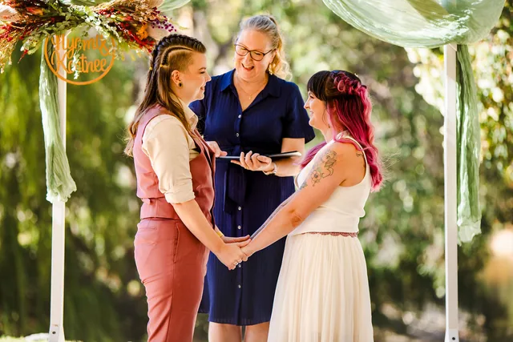
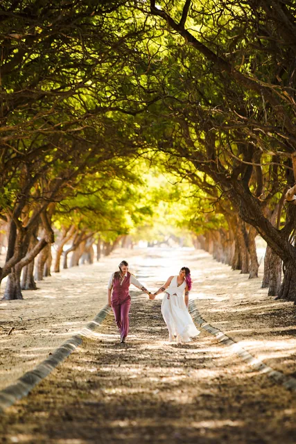
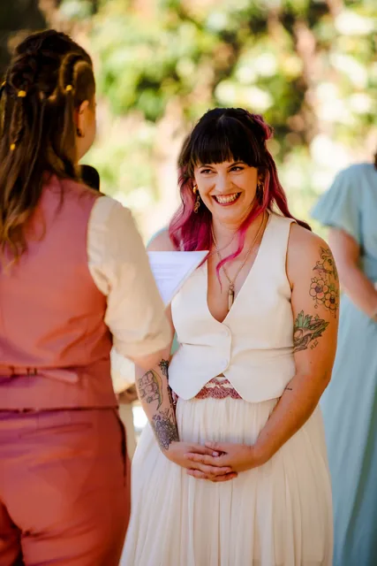
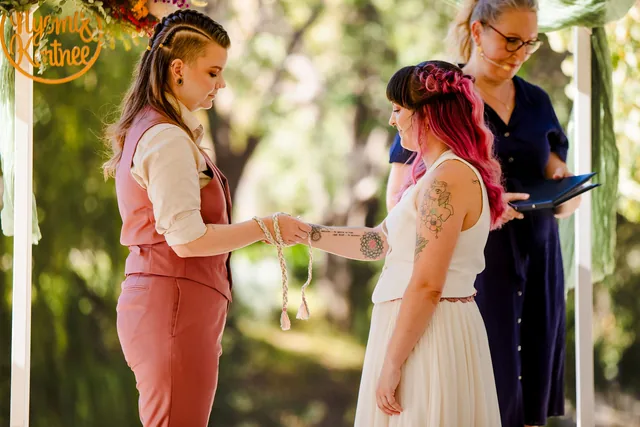
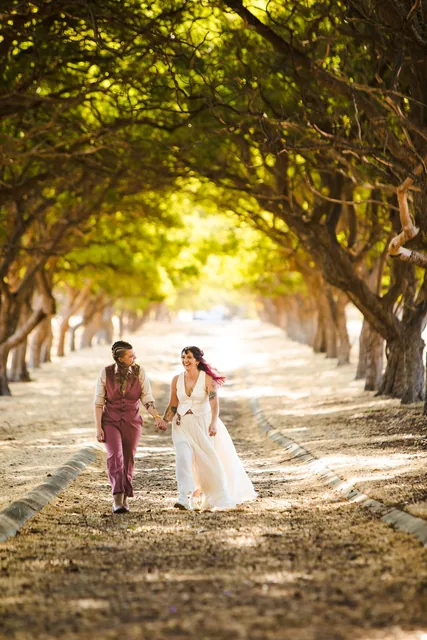
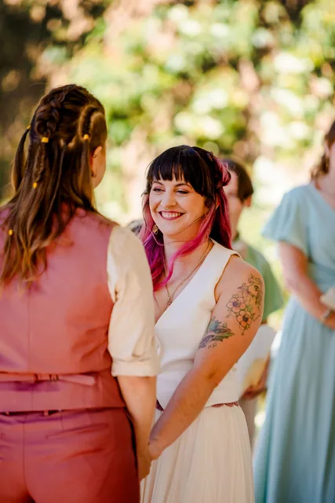
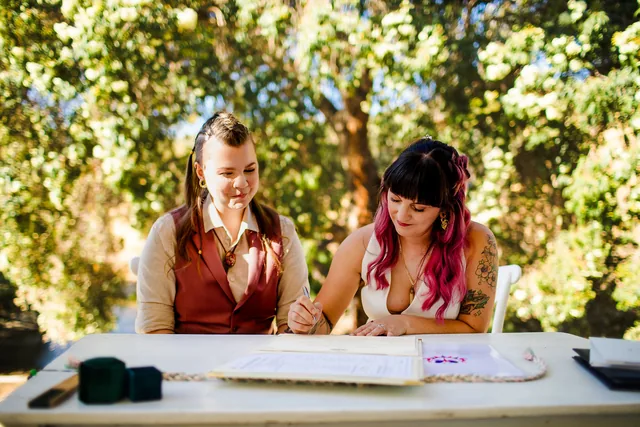
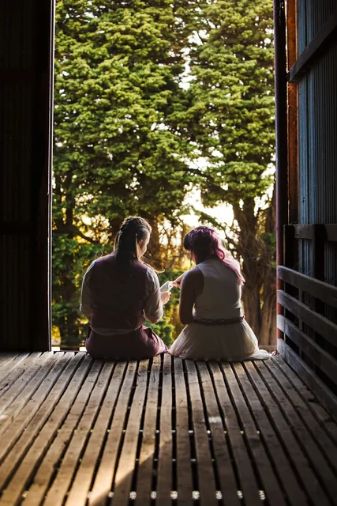
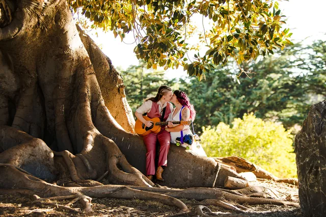
And another one here
Nat & Shanni
Quarry Farm, Whitby


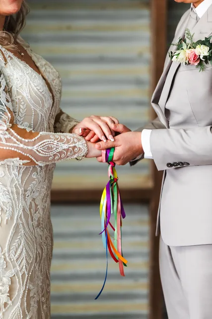

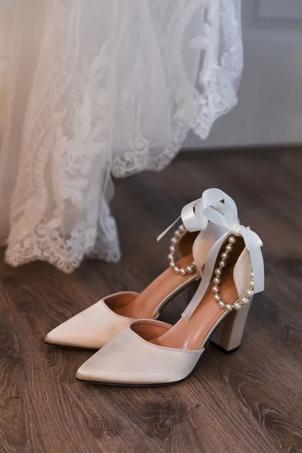


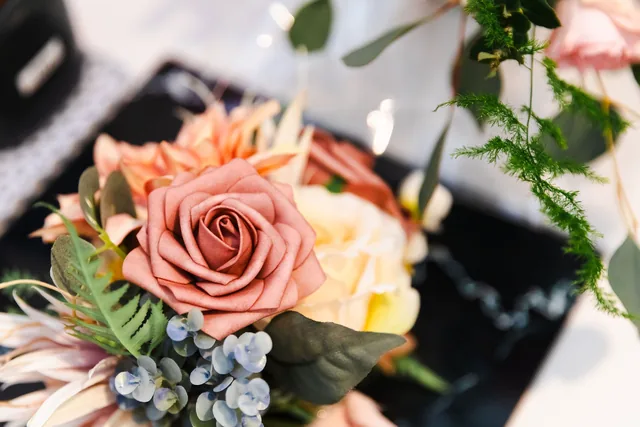

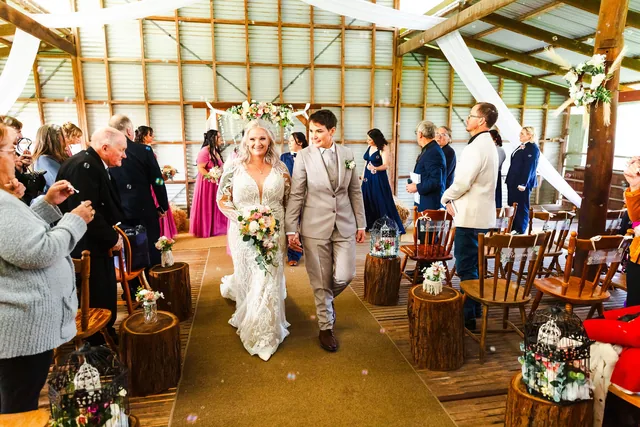

Getting married here?
We already know
the light
We've photographed at Quarry Farm and we shoot across the Perth Hills, Swan Valley and the coast every season. That means we're not working out your venue on the day — we're working out your family.
Eight photographers on the team means your date is rarely a problem, and there's always someone ready if plans change.
He captured our moments perfectly and all we had to do was enjoy our day! Would highly recommend Jesse.Nikki Moore

Let's check your date
Tell us when you're getting married at Quarry Farm. We'll come back within 24 hours.